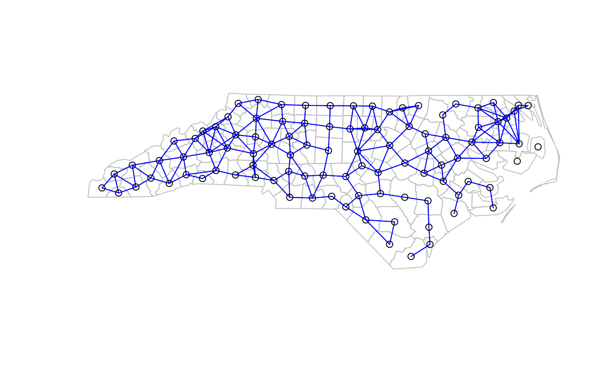

Global G test for spatial autocorrelation
globalG.test.RdThe global G statistic for spatial autocorrelation, complementing the local Gi LISA measures: localG.
globalG.test(x, listw, zero.policy=NULL, alternative="greater", spChk=NULL, adjust.n=TRUE, B1correct=TRUE, adjust.x=TRUE, Arc_all_x=FALSE)
Arguments
| x | a numeric vector the same length as the neighbours list in listw |
|---|---|
| listw | a |
| zero.policy | default NULL, use global option value; if TRUE assign zero to the lagged value of zones without neighbours, if FALSE assign NA |
| alternative | a character string specifying the alternative hypothesis, must be one of "greater" (default), "less" or "two.sided". |
| spChk | should the data vector names be checked against the spatial objects for identity integrity, TRUE, or FALSE, default NULL to use |
| adjust.n | default TRUE, if FALSE the number of observations is not adjusted for no-neighbour observations, if TRUE, the number of observations is adjusted |
| B1correct | default TRUE, if TRUE, the erratum referenced below: "On page 195, the coefficient of W2 in B1, (just below center of the page) should be 6, not 3." is applied; if FALSE, 3 is used (as in CrimeStat IV) |
| adjust.x | default TRUE, if TRUE, x values of observations with no neighbours are omitted in the denominator of G |
| Arc_all_x | default FALSE, if Arc_all_x=TRUE and adjust.x=TRUE, use the full x vector in part of the denominator term for G |
Value
A list with class htest containing the following components:
the value of the standard deviate of Moran's I.
the p-value of the test.
the value of the observed statistic, its expectation and variance.
a character string describing the alternative hypothesis.
a character string giving the name(s) of the data.
References
Getis. A, Ord, J. K. 1992 The analysis of spatial association by use of distance statistics, Geographical Analysis, 24, p. 195; see also Getis. A, Ord, J. K. 1993 Erratum, Geographical Analysis, 25, p. 276; Bivand RS, Wong DWS 2018 Comparing implementations of global and local indicators of spatial association. TEST, 27(3), 716--748 https://doi.org/10.1007/s11749-018-0599-x
See also
Examples
if (require(rgdal, quietly=TRUE)) { example(nc.sids, package="spData") sidsrate79 <- (1000*nc.sids$SID79)/nc.sids$BIR79 dists <- c(10, 20, 30, 33, 40, 50, 60, 70, 80, 90, 100) ndists <- length(dists) ZG <- vector(mode="list", length=ndists) names(ZG) <- as.character(dists) milesxy <- cbind(nc.sids$east, nc.sids$north) for (i in 1:ndists) { thisnb <- dnearneigh(milesxy, 0, dists[i]) thislw <- nb2listw(thisnb, style="B", zero.policy=TRUE) ZG[[i]] <- globalG.test(sidsrate79, thislw, zero.policy=TRUE) } t(sapply(ZG, function(x) c(x$estimate[1], x$statistic, p.value=unname(x$p.value)))) for (i in 1:ndists) { thisnb <- dnearneigh(milesxy, 0, dists[i]) thislw <- nb2listw(thisnb, style="B", zero.policy=TRUE) ZG[[i]] <- globalG.test(sidsrate79, thislw, zero.policy=TRUE, alternative="two.sided") } t(sapply(ZG, function(x) c(x$estimate[1], x$statistic, p.value=unname(x$p.value)))) }#> #> nc.sds> if (requireNamespace("rgdal", quietly = TRUE)) { #> nc.sds+ library(rgdal) #> nc.sds+ if (requireNamespace("spdep", quietly = TRUE)) { #> nc.sds+ library(spdep) #> nc.sds+ nc.sids <- readOGR(system.file("shapes/sids.shp", package="spData")[1]) #> nc.sds+ proj4string(nc.sids) <- CRS("+proj=longlat +ellps=clrk66") #> nc.sds+ row.names(nc.sids) <- as.character(nc.sids$FIPS) #> nc.sds+ rn <- row.names(nc.sids) #> nc.sds+ ncCC89_nb <- read.gal(system.file("weights/ncCC89.gal", package="spData")[1], #> nc.sds+ region.id=rn) #> nc.sds+ ncCR85_nb <- read.gal(system.file("weights/ncCR85.gal", package="spData")[1], #> nc.sds+ region.id=rn) #> nc.sds+ #> nc.sds+ plot(nc.sids, border="grey") #> nc.sds+ plot(ncCR85_nb, coordinates(nc.sids), add=TRUE, col="blue") #> nc.sds+ plot(nc.sids, border="grey") #> nc.sds+ plot(ncCC89_nb, coordinates(nc.sids), add=TRUE, col="blue") #> nc.sds+ } #> nc.sds+ } #> OGR data source with driver: ESRI Shapefile #> Source: "/home/rsb/lib/r_libs/spData/shapes/sids.shp", layer: "sids" #> with 100 features #> It has 22 fields#> Global G statistic standard deviate p.value #> 10 0.33548581 0.04859237 0.9612441 #> 20 0.02024945 -0.73262399 0.4637878 #> 30 0.04032434 -0.75011405 0.4531860 #> 33 0.05312271 0.40157023 0.6880003 #> 40 0.07400279 -0.04345713 0.9653371 #> 50 0.11471743 0.58686472 0.5572946 #> 60 0.15457553 -0.35823892 0.7201645 #> 70 0.19839023 -0.27864299 0.7805188 #> 80 0.24606972 -0.18791364 0.8509443 #> 90 0.30073463 0.11457610 0.9087811 #> 100 0.34879996 0.31591356 0.7520681